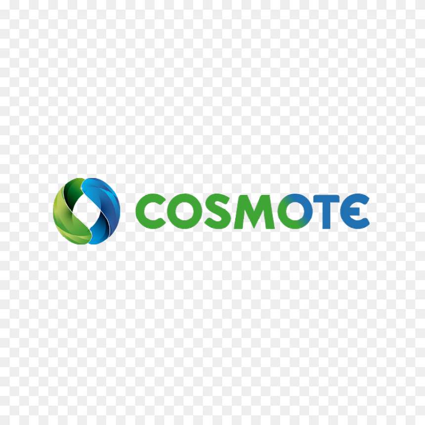

Σπουδάζω Πληροφορική με εξειδίκευση στον Web Development και τις Δικτυακές Τεχνολογίες

Εικόνα COSMOTE
Πρώην Πρακτική Technical Services
COSMOTE - Ξάνθη, Θράκη
1 Ιουλίου 2024 - 3 Οκτωβρίου 2024
Πρακτική άσκηση στον τομέα των τεχνικών υπηρεσιών με εμπειρία σε δικτυακές υποδομές και τεχνική υποστήριξη
2ο Τεχνικό Λύκειο Ξάνθης
Ειδικότητα: Ηλεκτρολόγος Εσωτερικών Εγκαταστάσεων
2018 - 2021
Απόκτηση τεχνικών γνώσεων σε ηλεκτρολογικές εγκαταστάσεις και συστήματα
Λεπτομέρειες Πρακτικής - COSMOTE
Η μοναδική εργασιακή εμπειρία που είχα ήταν μια τρίμηνη πρακτική άσκηση στη Cosmote μέσω ΤΤΛΠ, όπου εργάστηκα ως τεχνικός πεδίου στο Κέντρο Διανομής Οπτικών Ινών Ξάνθης. Εκεί, είχα την ευκαιρία να εργαστώ, πέρα από το τεχνικό μέρος (νέες συνδέσεις, βλάβες, μεταφορές κ.λπ.), με οπτικές ίνες. Ήμουν, μαζί με έναν συνάδελφο, από τους πρώτους που εγκατέστησαν οπτικές ίνες στη Ξάνθη, εκτελώντας συνδέσεις και επισκευάζοντας βλάβες. Κατά τη διάρκεια της πρακτικής μου στη Cosmote, ολοκληρώσαμε 40 πρώτες συνδέσεις σε όλη τη Ξάνθη. Ακόμη και όταν άρχισαν άλλοι, μας ζητούσαν να τους δείξουμε τα προβλήματα που αντιμετωπίζαμε. Εργάστηκα επίσης με εξοπλισμό Cisco. Η πρακτική μου συνέπεσε με την αλλαγή προγράμματος από WFM σε FSM. Συνολικά, κατά τη διάρκεια αυτής της τρίμηνης περιόδου έμαθα πολλά και ήμουν έτοιμος για μόνιμη θέση στη Cosmote, αλλά η πρακτική μου τελείωσε.